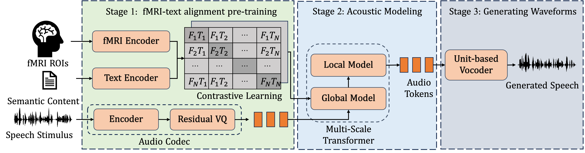

Abstract. Speech Synthesis from non-invasive brain activities offers a promising avenue for restoring communication abilities in patients with neurological disorders. Significant progress has been made in reconstructing natural speech from invasive brain recordings; however, these methods face practical challenges such as the high risk associated with brain surgery and the difficulties encountered in maintaining such devices over time. In this work, we formulate the task of non-invasive brain-to-speech synthesis and propose \textit{NeuralSpeak} tailored for this task, Specifically, we 1) leverage a multi-scale transformer model to address the challenges of handling excessively long sequences caused by the residual vector quantization-based neural codec in tokenization; 2) introduce a multi-window fMRI encoder, trained with contrastive learning to produce brain-derived embeddings that align closely with semantically rich text representations. \textit{NeuralSpeak} achieves state-of-the-art results in both objective and subjective benchmark evaluation. Furthermore, we provide evidence that our model is biologically plausible and interpretable, mirroring established physiological processes.\footnote{Audio samples are available at \url{https://NeuralSpeak.github.io}}

A high-level overview of NeuralSpeak. The framework consists of three core stages—(1) aligning fMRI representations with textual features, (2) autoregressively modeling audio tokens using multi-scale transformers, and (3) self-supervised waveform reconstruction. The framework employs the FLAN-T5 text encoder for linguistic feature extraction.